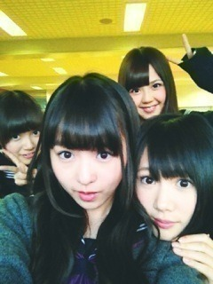

| 2012/11 24 Sat | 299回目*marika |
＼今朝の写真／

このワニの顔をちゃんと写真に
収めたかったけど
口の先までは無理でした
 っくそ
っくそ
っくそ
小太りワニのぬいぐるみ。
この子やさしい顔してると思う。
口を隠してても
顔が腑抜けてるのわかるねー
髪の毛すごいことになってるよおおお
......
お昼にね、
納豆アボカド豆腐丼という
なんとも健康的で適当なものを
醤油で適当に味つけて食べたよ。
おいっしかったあっ
というか納豆すきだー
和食すきだー
付いてる醤油だけじゃ
つまらないでしょ？
みなさんは 納豆＋○○
何の組み合わせがすきですか。
教えてください

納豆って意外と合うもの
沢山あるんだよね！
食べ物の話しかしてない
まりっか

......

らりんちゃん♪
後ろにひめかととまと

あーメンバーに会いたいなあー
はい！勉強します！

みなさんおやすみなさい。
まりか
コメント(239)
2012/11/24 23:12